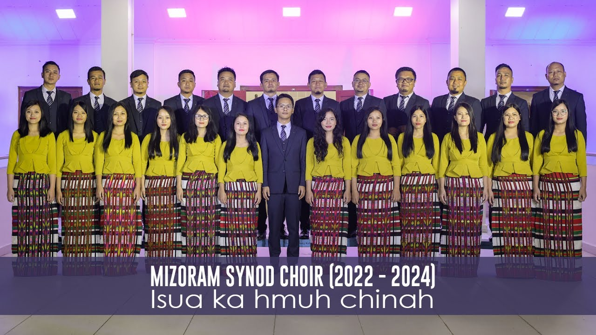

MIZORAM PRESBYTERIAN KOHHRAN
Welcome to Mizoram Synod Choir Website
Home
Contact
Mizoram Synod Choir hi Central Kristian Thalai Pawl enkawlna hnuaiah awmin Mizoram chhung leh pawn hmun hrang hranga Pathian fakna hla sain rawngbawlna an nei thin a, Conductor leh member te pawh Pathian tih mi leh mite tana entawntlak tur thlan thin an ni. An rawngbawlna Pathianin malsawmin an zai pawh a nung thin hle. Kohhran, pawl leh programme hrang hrangah zaia rawngbawlin an feh chhuak thin a ni.
Chhiar belh duh tan

2022-2024
2020-2022
2018-2020
2016-2018
2014-2016
Kum 2022-2024 Memberte:
Director
Vanromawia
Conductor
Benjamin Pazawna | Chanmari Bial | Chanmari Branch
Soprano
- Lalsiamliani | Mission Vengthlang Bial | Jubili Branch
- Pc Zothankimi | Dawrpui Vengthar Bial | Dawrpui Vengthar Branch
- C Laldingpuii | Bethlehem Bial | Bethlehem Branch
- Lalremtluangi Ralte | Zemabawk Bial | Zemabawk Branch
- Lalhmangaihzuali | Luangmual Bial | Luangmual Branch
- Wendy Zothanpuii | Dawrpui Bial | Zarkawt Branch
Contralto
- C Lalzawmliani | Chawnpui Bial | Chawnpui Branch
- Christina Lalhmingmawii | Bungkawn Bial | Bungkawn Branch
- Zodinpuii Ralte | Electric Veng Bial | Electric Veng Branch
- F Lalrammuani | Republic Bial | Republic Branch
- R Vanlalhmingmawii | Kulikawn Bial | Kulikawn Vengthlang Branch
- R Lalchhandami | Ramthar Bial | Ramthar Veng Branch
Tenor
- R Vanlalruata | Chaltlang Bial | Chaltlang Branch
- C Lalrinhlua | Leitan Bial | Leitan South Branch
- Benjamin Thanglianmawia | Mission Veng Bial | Mission Veng Branch
- Lallawmsanga | Hunthar Bial | Hunthar Branch
- Joseph Ramdinmawia | ITI Veng Bial | ITI Veng Branch
- Lalrinliana | Maubawk Bial | Lawipu Branch
Bass
- Lalruatsanga | Nusery Bial | Khatla South Vengthar Branch
- Lalrinnunga | Tuikual Bial | Tuikual Branch
- K Lalremmawia | Durtlang Bial | Durtlang Branch
- Wilfred Lalrintluanga | Venghnuai Bial | Venghnuai Branch
- Lalrintluanga Zadeng | Ramhlun North Bial | Ramhlun Venglai Branch
- Lalnunchama | Ramhlun Bial | Ramhlun Vengchung Branch